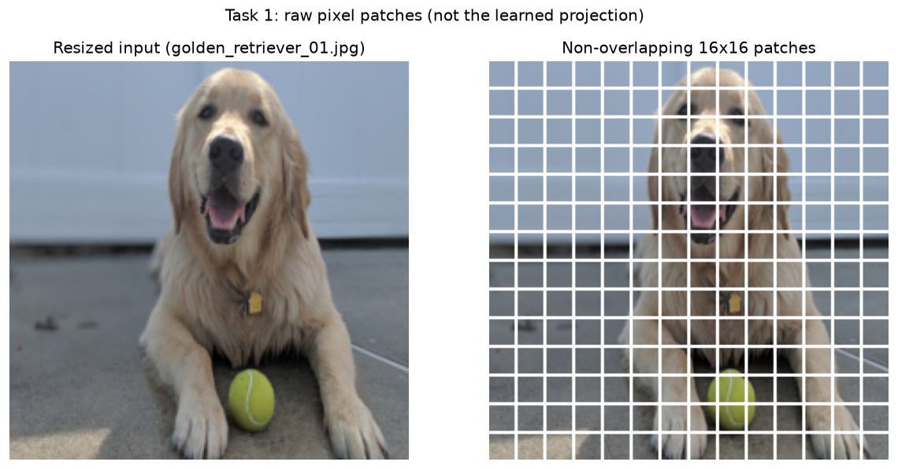
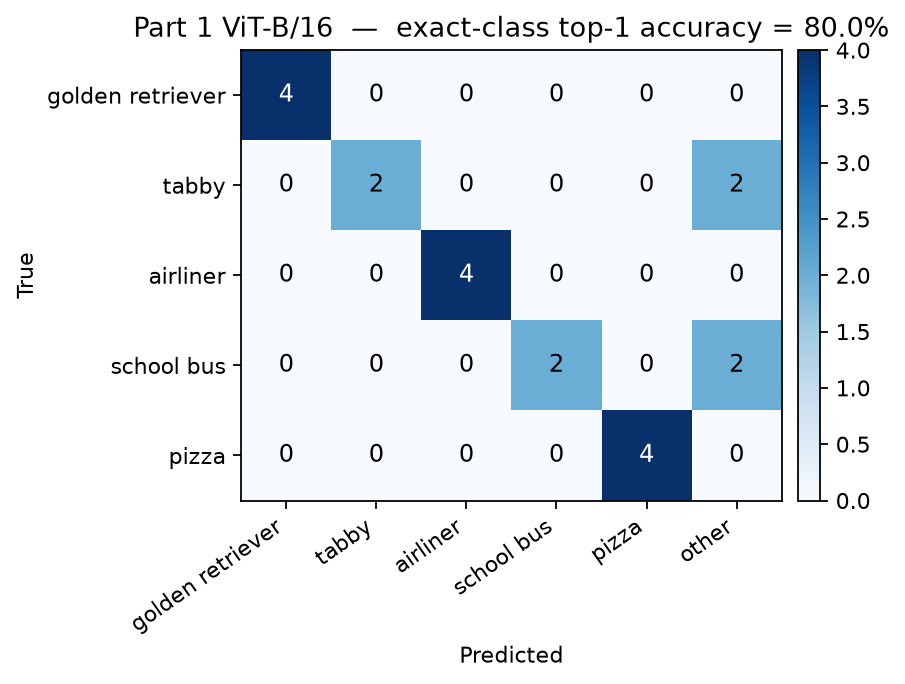
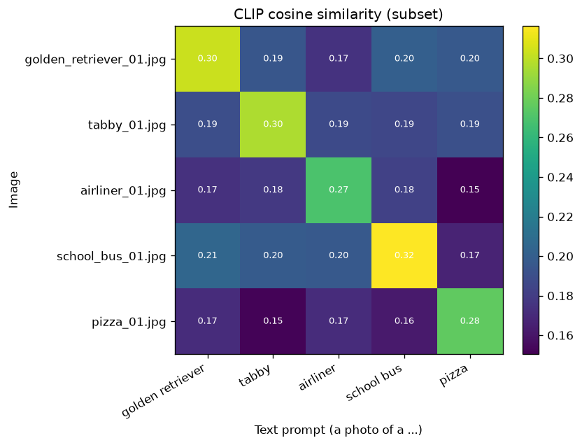
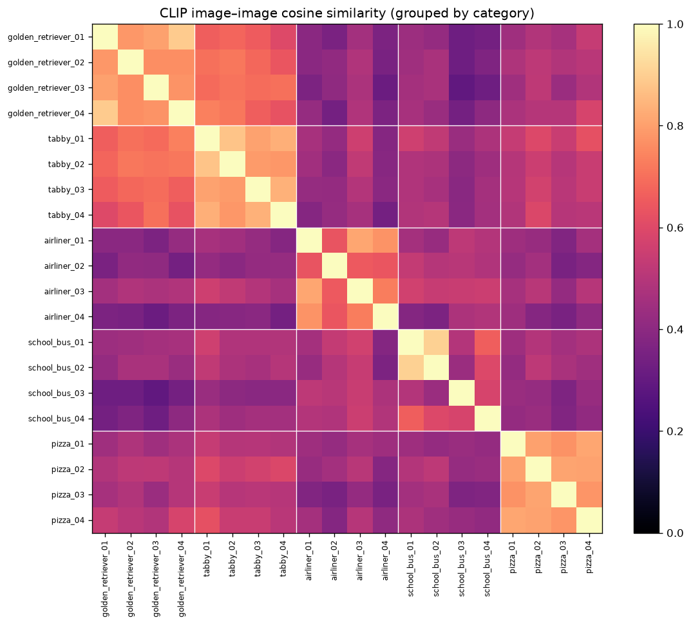

This report studies two frozen pretrained vision models on the same 20-image collection.
Part 1 uses torchvision’s ViT-B/16 checkpoint
ViT_B_16_Weights.IMAGENET1K_V1 for 1000-way ImageNet classification
and walks through how the model turns a 224×224 image into a token sequence.
Part 2 uses OpenAI CLIP ViT-B/32 for image–text matching, prompt wording,
and image–image similarity. Weights stay frozen in both parts; the work is
inference and interpretation, not training.
The two models answer different questions. ViT-B/16 must pick one of ImageNet’s 1000 nouns. CLIP compares an image to a short list of text strings in a shared embedding space. That difference, not a generic claim that one architecture is better, is the main result of the collection.
Five categories were chosen because each is an exact ImageNet-1K class name:
golden retriever (207), tabby (281), airliner (404), school bus (779), and
pizza (963). Four Wikimedia Commons photographs were collected for each class
(20 images total) and stored under images/<category>/. Every file
is Creative Commons, CC0, or public domain; no non-free Wikimedia files are used.
Part 1 scores a prediction as correct only when the top-1 synset matches the
recorded ImageNet index. A nearby label such as Labrador retriever for a golden
retriever counts as wrong. Predictions outside the five chosen classes are
placed in an other column of the confusion matrix. Part 2 instead
asks CLIP to choose among the five category names (or a prompted rewrite of those
names) and cannot emit off-list ImageNet nouns.
ViT-B/16 tokenizes a 224×224 image as a grid of non-overlapping 16×16 patches. That grid is
(224/16) × (224/16) = 14 × 14 = 196 patches.
A learned CLS token is prepended, so the transformer sequence length is 197.
This matches the checkpoint: encoder.pos_embedding has shape
(1, 197, 768). Figure 1 shows the raw pixel tiles on
golden_retriever_01.jpg. Those tiles are still RGB; they are not
the model’s tokens.
The transformer never reads the raw tiles. Each 16×16×3 patch is
mapped to a 768-dimensional embedding. Flattening a patch already gives
16×16×3 = 768 numbers; a learned linear map with bias then
produces the token. In this checkpoint that map is
model.conv_proj, a Conv2d(3, 768, kernel=16, stride=16).
Convolution with kernel equal to stride equal to patch size is the same as
extracting non-overlapping patches and multiplying each by the same weight
matrix. Self-attention has no built-in grid location, so a learned table of 197
vectors is added after the CLS token is prepended. The classification head
model.heads is a linear layer from 768 to 1000 that reads only the
final CLS representation. The CLS token is a learnable aggregation query for
the whole image, not a mean pool of patch tokens.

golden_retriever_01.jpg.
Left: the image resized to 224×224. Right: the same image cut into a
14×14 grid of non-overlapping 16×16 RGB tiles. The tennis ball
in front of the dog is visible in both panels and later splits the
classifier’s probability mass.
Each image is passed through the checkpoint’s official preprocessing (resize to 256, center crop 224, ImageNet mean and standard deviation) and the frozen model. Top-1 accuracy on this collection is 16/20 = 80.0% under exact ImageNet-index matching. Per-class counts are 4/4 golden retriever, 2/4 tabby, 4/4 airliner, 2/4 school bus, and 4/4 pizza. There is no cross-confusion among the five target classes. All four errors go to other (Figure 2): Egyptian cat, tiger cat, folding chair, and minibus.

Table 1 lists the cases used in the discussion. Canonical close-ups are
peaked on the right synset: pizza_01.jpg is pizza at 0.901 with
almost no residual mass, and the two yellow North-American buses
(school_bus_01, _02) are school bus at 0.900 and
0.899. Airliners land between 0.81 and 0.89, usually with wing as the
runner-up. When the object is large, centered, and looks like ImageNet training
photos, the CLS representation is peaked on the correct class.
| Image | True class | Exact? | Top-1 | Top-2 |
|---|---|---|---|---|
| golden_retriever_01 | golden retriever | yes | golden retriever 0.561 | tennis ball 0.341 |
| pizza_01 | pizza | yes | pizza 0.901 | broccoli ~0.000 |
| school_bus_01 | school bus | yes | school bus 0.900 | traffic light ~0.000 |
| tabby_01 | tabby | no | Egyptian cat 0.674 | tabby 0.119 |
| tabby_02 | tabby | no | tiger cat 0.715 | tabby 0.142 |
| school_bus_03 | school bus | no | folding chair 0.114 | pier 0.086 |
| school_bus_04 | school bus | no | minibus 0.902 | school bus 0.014 |
Three error types appear, and they are not the same failure.
Split objects.
golden_retriever_01.jpg is counted correct, but the mass is split
between golden retriever (0.561) and tennis ball (0.341). Both objects are in
the crop (Figure 1). The head cannot say “dog and tennis ball”;
it can only rank ImageNet nouns. The same photograph later shows this limit
again in CLIP when a tennis-ball prompt is added to the candidate set.
Fine-grained label collisions.
ImageNet has three overlapping striped-cat synsets: tabby (281), tiger cat (282),
and Egyptian cat (285). tabby_02.jpg is a confident cat prediction
that prefers tiger cat (0.715) with tabby only at 0.142.
tabby_01.jpg prefers Egyptian cat (0.674) with tabby at 0.119.
These are collisions among nearby labels, not failures to recognize a cat.
Domain shift and a bad crop.
school_bus_04.jpg is a non-yellow Hong Kong coach. The model is
very sure it is a minibus (0.902); school bus is only 0.014. The role is school
transportation, but the appearance matches a different ImageNet category.
school_bus_03.jpg is different: top-1 is folding chair at only
0.114, then pier, shopping cart, and park bench. Confidence is low and the
labels are scene furniture, which is what happens when the center crop misses
the buses (distant vehicles, a lot of pavement and structure). Unlike the
minibus mistake, the model is not committed to any vehicle class.
The model is forced to answer “which of these 1000 nouns is most
likely?” That is the question ImageNet training asked. Nearby but distinct
synsets count as incorrect under exact-match scoring, and the output vocabulary
cannot describe a scene that is not one of those nouns. Most of the misses in
this collection come from that closed set, plus the unresolved
school_bus_03 crop.
CLIP encodes each image and each candidate text into the same 512-dimensional
space. Matching is cosine similarity of L2-normalized vectors, scaled by a
learned temperature, then softmaxed over the texts that were passed in. On this
run, exp(logit_scale) is 100.000, so logits are essentially
100 × cosine. Encoded features have shape (20, 512) for
images and (5, 512) for the prompts
a photo of a {category}. Cosines on that 20×5 matrix range
from 0.149 to 0.333; logits range from 14.89 to 33.29; every softmax row sums
to 1.
The custom implementation matches CLIP’s built-in
model(images, texts) forward pass: the maximum absolute logit
difference is 1.34×10−5, and predicted labels agree on
all 20 images. Cosine only scores alignment. The temperature stretches the
range so softmax is neither too flat nor too peaky; it does not change which
text wins argmax. Softmax is a distribution over the current
candidate set, not a calibrated probability that the object exists in the
world. Adding, dropping, or rewording a candidate can change every probability
on the row even though the image embedding is unchanged.
That last point is visible on golden_retriever_01.jpg, the same
photo as Figure 1. Against the five category prompts, golden retriever
receives softmax 1.000. After adding a photo of a tennis ball,
the six-way row becomes 0.113 for golden retriever and 0.887 for tennis ball.
Part 1’s 0.561/0.341 split and Part 2’s 0.113/0.887 flip
are the same photograph under two closed vocabularies.

a photo of a {category}. The diagonal is the brightest cell
in every row. The strongest match is school_bus_01 versus
school bus (0.32); the weakest on-diagonal is airliner (0.27).
Three templates were compared with the same frozen weights and the same five
category names: the bare name {category},
a photo of a {category}, and
an image showing a {category}. All three score
20/20 = 100%. No image changes predicted class when the
wording changes, and each confusion matrix is a perfect 5×5 identity
(4 correct per class). On a 5-way closed set of visually distinct objects, the
image embedding already sits nearest the right category name. Wrapping that
name in a short sentence mostly rescales the softmax, not the argmax.
| Template | Accuracy | Largest confidence move (class unchanged) |
|---|---|---|
{category} |
20/20 = 100% | school_bus_03: 0.950 → 0.975 → 0.976 |
a photo of a {category} |
20/20 = 100% | |
an image showing a {category} |
20/20 = 100% |
Wording still moves the winning score. The largest shift is
school_bus_03.jpg (the distant buses that Part 1 called
folding chair): 0.950 with the bare name, 0.975 with
a photo of a …, and 0.976 with
an image showing a …. Several tabbies move by about 0.01.
Canonical close-ups such as pizza_01 and
school_bus_01 stay at 1.000 for every template.
Prompting and fine-tuning are different operations. All three runs use the same frozen ViT-B/32 weights. Changing the template only changes the text tokens, so the text encoder emits a different vector. Fine-tuning would update image-encoder, text-encoder, or logit-scale parameters on new paired data. Prompting is inference-time control of the query; fine-tuning is a change to the model itself.
The same L2-normalized CLIP image embeddings can be compared to one another.
Figure 4 shows the 20×20 cosine matrix with rows and columns grouped
by the Part 1 categories. Every category has a higher mean intra-class
cosine than its mean cosine to the other classes (Table 3). Tabby is the
tightest block (0.821 vs 0.529). Golden retriever and pizza both sit at 0.797
intra-class. School buses are the loosest block (0.612 vs 0.447): the set mixes
two canonical yellow U.S. buses with a distant group shot
(school_bus_03) and a non-yellow Hong Kong coach
(school_bus_04).
| Category | Intra-class | Inter-class |
|---|---|---|
| golden retriever | 0.797 | 0.492 |
| tabby | 0.821 | 0.529 |
| airliner | 0.707 | 0.437 |
| school bus | 0.612 | 0.447 |
| pizza | 0.797 | 0.473 |
The strongest pairs are within class and driven by the main object:
school_bus_01–school_bus_02 at 0.904 (both long
yellow buses), two golden-retriever portraits at 0.891, and several tabby pairs
around 0.83–0.88. The unexpected cross-category neighbors are all golden
retriever ↔ tabby (0.70–0.74), not bus–pizza or dog–plane.
Those photographs are close-up furry animals with warm coats on simple
backgrounds. CLIP is picking up species-adjacent appearance and color. The
weaker school-bus block is the counterpart: once the main object no longer
looks like the others, intra-class cosine drops even though the label is the
same.

On this collection, CLIP’s image vectors mostly track the main object and how it is framed. Images of the same class that look alike sit close together. When the objects do not look as similar, as with the other bus photographs, the intra-class cosine weakens. The representation is visual, not a lookup of the folder name.
Part 1’s ViT-B/16 was trained with 1000-way ImageNet cross-entropy
and is scored here as an exact synset match (16/20 = 80%). CLIP was trained
with a contrastive image–text objective, and in Part 2 it may only
pick among five strings. It cannot emit Part 1’s off-list labels
(Egyptian cat, tiger cat, minibus, folding chair), which is why
tabby_01, tabby_02, school_bus_03, and
school_bus_04 all become correct under CLIP. That is a different
task, not evidence that CLIP is generally better.
The same 20 photographs make the difference concrete. A closed 1000-way classifier is brittle to nearby synsets, domain shift, and crops that miss the object, and it cannot report two objects at once. A frozen image–text model can rephrase the question at inference time, but its softmax is only relative to the texts you supply, and its image space groups photos by appearance and framing rather than by the label string. Prompt wording on this easy 5-way set changed confidence, not identity. Fine-tuning would be required to change the model itself.
Dosovitskiy, A., et al. (2021). An image is worth 16×16 words: Transformers for image recognition at scale. ICLR.
Radford, A., et al. (2021). Learning transferable visual models from natural language supervision. ICML.
Wikimedia Commons. Twenty photographs reused under the CC, CC0, or public-domain licenses listed on each file page.